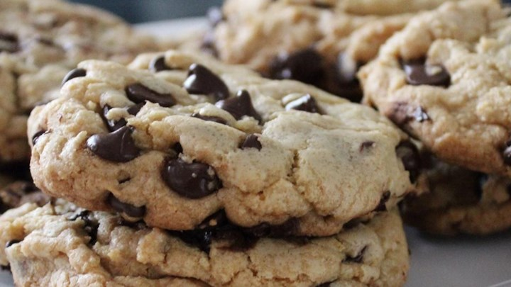

If i did get into baking it would be baking delicious cookies.

**Prep:** 10 minutes
**Cook Time:** 15 minutes
**Cool Time:** 15 minutes
**Total:** 40 minutes
2 cups all-purpose flour 2 cups all-purpose flour](https://www.walmart.com/ip/2-Pack-Gold-Medal-All-Purpose-Flour-10-Lb/963877437?wmlspartner=wlpa&selectedSellerId=0&adid=22222222227000000000&wl0=&wl1=g&wl2=c&wl3=42423897272&wl4=aud-566049426705:pla-51320962143&wl5=9002030&wl6=&wl7=&wl8=&wl9=pla&wl10=8175035&wl11=online&wl12=963877437&veh=sem&gclid=Cj0KCQjw5rbsBRCFARIsAGEYRwfvZSTX-qibaXHuxRZrOHJWjFyXYNyY8c3X29pcSF7cli54_FKJfHsaAvrEEALw_wcB)
[1/2 teaspoon baking soda](https://www.amazon.com/Arm-Hammer-Pure-Baking-Soda/dp/B00I549P1I/ref=lp_6492289011_1_1_s_it?s=grocery&ie=UTF8&qid=1569589840&sr=1-1-spons&psc=1&spLa=ZW5jcnlwdGVkUXVhbGlmaWVyPUExNkxOQjJGRkZXM0I2JmVuY3J5cHRlZElkPUEwODUwNjU3MzdOOE1OWkVFR0k5USZlbmNyeXB0ZWRBZElkPUEwMDQ4MzA5MkVZN0tOUjBXMzk2OCZ3aWRnZXROYW1lPXNwX2F0Zl9icm93c2UmYWN0aW9uPWNsaWNrUmVkaXJlY3QmZG9Ob3RMb2dDbGljaz10cnVl)
[1/2 teaspoon salt](https://www.instacart.com/shopping/products/16290433-diamond-crystal-kosher-diamond-crystal-kosher-salt-3-lb?rid=360&utm_source=instacart_google&utm_medium=sem_shopping&utm_campaign=ad_demand_prospecting_shopping&ko_click_id=Cj0KCQjw5rbsBRCFARIsAGEYRwen6NW7aOHSd-6T9TxPA3d7Z1LCPoyshyiPWcDv5iL3ZLMnbSd2StwaAqddEALw_wcB&utm_source=instacart_google&utm_medium=paid_search_nonbrand&utm_campaign=ad_demand_shopping_food_ma_boston_newengen?ko_click_id=Cj0KCQjw5rbsBRCFARIsAGEYRwen6NW7aOHSd-6T9TxPA3d7Z1LCPoyshyiPWcDv5iL3ZLMnbSd2StwaAqddEALw_wcB&utm_medium=paid_search&utm_source=instacart_google&utm_campaign=ad_demand_prospecting&utm_term=&gclid=Cj0KCQjw5rbsBRCFARIsAGEYRwen6NW7aOHSd-6T9TxPA3d7Z1LCPoyshyiPWcDv5iL3ZLMnbSd2StwaAqddEALw_wcB)
[3/4 cup unsalted butter, melted](https://www.amazon.com/Land-Lakes-stick-Unsalted-Butter/dp/B07NVY92SP/ref=sr_1_6?keywords=land+o+lakes+unsalted+butter&qid=1569590061&sr=8-6)
[1 cup packed brown sugar](https://www.amazon.com/Domino-Dark-Brown-Sugar-Lb/dp/B007FA1EBW)
[1/2 cup white sugar](https://www.amazon.com/DOMINO-GRANULATED-PURE-WHITE-SUGAR/dp/B00A5U708A?ref_=fsclp_pl_dp_4)
[1 tablespoon vanilla extract](https://www.amazon.com/McCormick-Natural-Vanilla-Extract-Gluten-Free/dp/B005MIWPGC?ref_=fsclp_pl_dp_1)
[2 eggs](https://www.amazon.com/Amazon-Brand-Happy-Belly-Cage-Free/dp/B01769TAYO/ref=zg_bs_6520434011_2?_encoding=UTF8&psc=1&refRID=0JWA4RNHY786ZSQWM86S)
[2 cups semi-sweet chocolate chips](https://www.amazon.com/Nestle-Chocolate-Semi-Sweet-Morsels-oz/dp/B001C1MCHK)
# Directions
1. Preheat oven to 325°F
2. Grease cookie sheet or line with parchment paper.
3. Sift together the flour, baking soda and salt.
4. In a medium bowl, cream together the melted butter, brown sugar, and white sugar until well blended.
5. Beat in the vanilla, egg, and egg yolk until light and creamy.
6. Mix in the sifted ingredients until just blended.
7. Stir in the chocolate chips by hand using a wooden spoon.
8. Drop cookie dough 1/4 of a cup at a time onto the prepared cookie sheets. cookies should be about 3 inches apart.
9. Bake for 15 to 17 Minutes in the preheated oven or until the edges are lightly toasted.